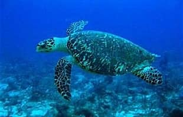

Tartaruga-de-couro
A tartaruga-de-couro é a maior tartaruga marinha do mundo. Ela se alimenta principalmente de águas-vivas e está ameaçada pela poluição, pesca e destruição de seu habitat.

Tartaruga-verde
A tartaruga-verde é uma espécie de tartaruga marinha conhecida por sua carapaça verde. Ela se alimenta principalmente de algas e está ameaçada pela poluição, pesca e destruição de seu habitat.

Tartaruga de pente
A tartaruga-de-pente é uma espécie de tartaruga marinha conhecida por sua carapaça em forma de pente. Ela se alimenta principalmente de águas-vivas e está ameaçada pela poluição, pesca e destruição de seu habitat.
Tartaruga de pente
A tartaruga-de-pente é uma espécie de tartaruga marinha conhecida por sua carapaça em forma de pente. Ela se alimenta principalmente de águas-vivas e está ameaçada pela poluição, pesca e destruição de seu habitat.
Tartaruga cabeçuda
A tartaruga-cabeçuda é uma tartaruga marinha de cabeça grande. Vive nos oceanos e se alimenta de pequenos animais marinhos. Ela coloca seus ovos nas praias. Está ameaçada pela poluição, pesca e destruição das praias.